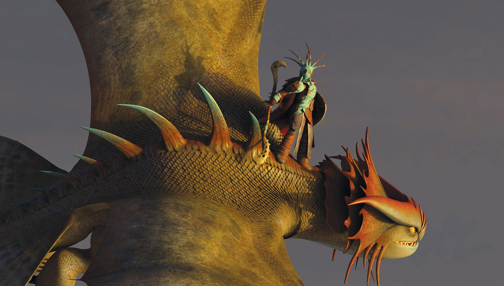
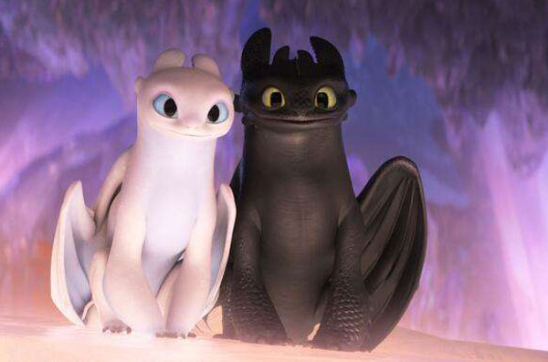

"他大块头斯图依克唯一的儿子…是部落首领的继承人…还是这个
世界上最伟大的驯龙大师!
—————— 阿斯翠向 德拉戈·布拉德韦斯特 描述小嗝嗝
"他大块头斯图依克唯一的儿子…是部落首领的继承人…还是这个
世界上最伟大的驯龙大师!
—————— 阿斯翠向 德拉戈·布拉德韦斯特 描述小嗝嗝
 龙族非常稀有且最危险聪明的龙(维京人传说是死神与雷神的后代)!
龙族非常稀有且最危险聪明的龙(维京人传说是死神与雷神的后代)!
 阿斯翠，20岁，自信果敢，是赛龙大赛的冠军也是小嗝嗝发展稳定的女朋友。
不但漂亮，还是小嗝嗝身边最佳倾听者，并且会适时地给予他理性建议。
阿斯翠，20岁，自信果敢，是赛龙大赛的冠军也是小嗝嗝发展稳定的女朋友。
不但漂亮，还是小嗝嗝身边最佳倾听者，并且会适时地给予他理性建议。
 它是龙族最漂亮、精力最充沛的一员，皮肤色彩斑斓，有鹦鹉一样
的习性、鸸鹋的步态和雷克斯暴龙的姿势，是鸟类的祖先。
它是龙族最漂亮、精力最充沛的一员，皮肤色彩斑斓，有鹦鹉一样
的习性、鸸鹋的步态和雷克斯暴龙的姿势，是鸟类的祖先。

在过去的20年，云中跃一直是沃尔卡飞行和救助其他龙时的伙伴。
骄傲自信、身形高大的云中跃一直自视为沃尔卡山中地位最高的龙，
仅次于龙王

“她十分罕见、难以获得而且充满野性。”